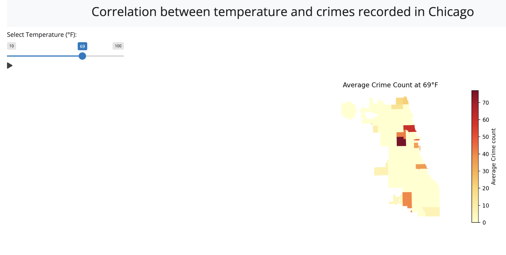

DAP II: Final Project
Workflow and Team Members
| Name | GitHub Username | Responsibility |
|---|---|---|
| Genevieve Madigan | Madigan989 | Write-up and data visualization |
| Summer Negahdar | Summer99D | Creation of Shiny app and data visualization |
| Jenny Zhong | datapolicypython | Data cleaning and preparation |
Research Question:
Our project investigates the impact of temperature on crime rates in Chicago, focusing on both violent and non-violent crimes within specific ZIP codes. Building on prior research, we analyze data from 2010–2015 to test the temperature-aggression hypothesis and routine activity theory, which suggest that higher temperatures increase aggression and influence daily activities, creating more opportunities for crime. Understanding these dynamics can inform public safety strategies and resource allocation in response to climate patterns. This study extends findings from earlier research, testing conclusions across a period of varying political leadership and economic conditions. By exploring environmental factors’ effects on criminal activity, we aim to provide insights into how climate patterns shape public safety challenges. This research highlights the potential role of temperature in influencing crime trends and offers practical applications for crime prevention and resource planning.
Methodology
We analyzed crime data (2010–2015) from the Chicago Data Portal and weather data from NOAA, aligning both to ZIP codes using ZCTA shapefiles. Python was used to convert coordinates into geospatial points, reproject data, and apply spatial buffers for accuracy. A spatial join mapped crime and weather data to ZIP codes, followed by cleaning, narrowing the timeframe, and standardizing formats, creating a framework to explore temperature’s impact on crime in Chicago.
Challenges
The 30GB crime dataset was narrowed to 2010–2015, reducing it to 13GB but still requiring sampling for efficient processing in the Shiny app. Geospatial analysis and standardizing date formats posed additional challenges, but extensive preprocessing enabled seamless data integration for reliable visualizations like bar charts and choropleth maps.
Crime data: Merging crime data together and merging crime data with ZIP Code
As mentioned above, after the presentation, we decided that we would shorten our datasets to 2010 - 2015 so it would be easier to load into our laptops. Subsequently, the code we have accommodates this change below. First, we load the CSV datasets into dataframes into python. Then we examine the columns of crime data. We then merge the datasets together so we have a crime rate dataset from 2010 - 2015 and examine it. We loaded ZIP code shapefiles, transformed spatial data to a consistent coordinate system (EPSG:4326), and combined it into a GeoDataFrame. Buffer zones enabled a spatial join to map crime data to ZIP codes, with the results saved as a CSV. The data was then cleaned by dropping irrelevant columns, reformatting dates, and reorganizing for clarity before saving.
Now we will convert the longitude and latitude in the crime data into ZIP Code by using an external shapefile and cross referencing this shapefile with our crime dataset
Here, we are transforming spatial data into a consistent coordinate reference system (EPSG:4326), creating geometric points from longitude and latitude, and combining this data into a GeoDataFrame for spatial analysis. Then we are creating buffer zones around each geometry point in crime_gdf with a radius of 0.01 units, modifying the geometry column to reflect these expanded areas. We are then performing a spatial join to match crime_gdf (containing crime data) with zip_shapes based on their spatial intersection, and saving the resulting data to a CSV file.
Merging weather data together and merging weather data with ZIP code
We combined weather datasets from 2010–2015, converted the data into a GeoDataFrame, and performed a spatial join to align weather data with ZIP codes. After dropping irrelevant columns and refining the data, we saved the cleaned and structured weather dataset as a final CSV file.
Data Visualization
After filtering data from 2010–2015, we grouped and cleaned crime data, categorized crime types, merged it with weather data by ZIP code and date, and created visualizations including a bar chart, a GeoPandas timeseries, and a choropleth map.

This bar chart demonstrates crime frequency across temperature ranges, revealing a significant increase in crimes at higher temperatures. This aligns with routine activity theory, as warmer temperatures encourage outdoor activities, potentially increasing encounters between offenders and victims. Conversely, fewer crimes generally occur in colder temperature ranges, likely due to reduced outdoor activities and interactions.

This chart illustrates the trend of crime occurrences over time, highlighting a noticeable increase during the summer months, suggesting a seasonal pattern in criminal activity.

This choropleth map displays crime locations in Chicago, with points indicating crime occurrences and their color representing the temperature. Red points signify higher temperatures, while blue points indicate lower temperatures. The map shows that red points are more prominent, suggesting that crimes are more frequent during warmer weather. This highlights a possible connection between temperature and crime rates.
Shiny App

As we can see there are certain zipcodes that have a high crime rate regardless but in general as temperature increases the number of zipcodes/neighborhoods that have more crimes also spikes. (meaning the total average of crime rate increases in general)
Policy Implications
Our findings demonstrate a positive correlation between temperature and violent crime rates, aligning with prior research on the relationship between environmental factors and criminal activity. This connection underscores the importance of understanding how temperature fluctuations influence public behavior and safety. From a public safety perspective, this insight allows police departments to better anticipate “busy seasons” for violent crimes, particularly during warmer months. With this knowledge, law enforcement agencies can optimize resource allocation, ensuring adequate staffing and preparation to handle increased workloads effectively. Additionally, the implications extend to the broader context of climate change. As global temperatures continue to rise, it becomes increasingly critical to assess and address the potential impacts on public safety. Policymakers can use this information to formulate strategies that mitigate the risks associated with climate-induced changes in crime patterns, contributing to more resilient urban environments.
Directions for Future Work
To broaden the scope and applicability of our findings, future research should expand the analysis to other American cities. This would help determine whether the patterns observed in Chicago are consistent across different urban contexts, offering a more comprehensive understanding of how temperature impacts crime in diverse environments. A global analysis could further enhance the study by assessing whether the relationship between temperature and crime is universal or shaped by cultural and geographic factors. Examining this phenomenon in international settings would provide valuable insights into the broader applicability of our findings and reveal potential variations influenced by societal norms and regional climates. Additionally, incorporating other variables such as humidity, unemployment rates, and urban density could create a more robust and nuanced model. These factors may interact with temperature in complex ways, offering a deeper understanding of the environmental and socio-economic drivers of crime. By expanding this research, we can gain a more thorough understanding of the intersection between climate, public safety, and social behavior, ultimately contributing to more informed policy and crime prevention strategies.